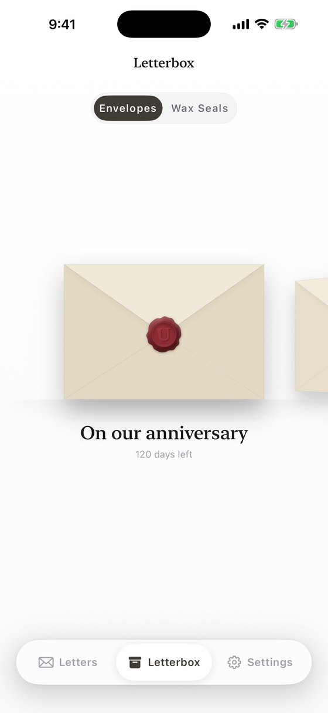
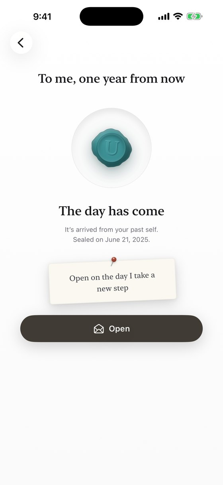

Seal a letter
to the future.
Write a letter, add a photo or your voice, and seal it with wax. Pick a day, and no one can open it until then. Three months, six months, a year, or further into the future — a notification quietly arrives.

